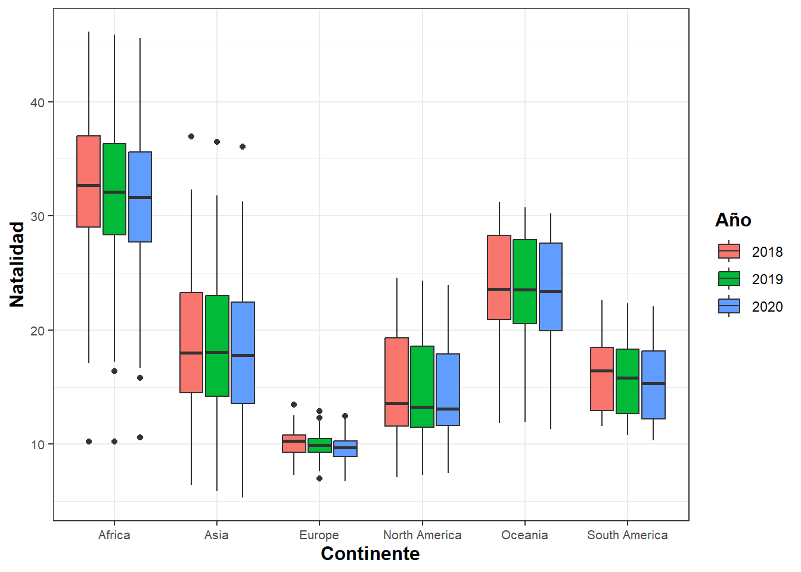

Este proyecto recoge datos poblacionales de los países del mundo, tomados en 3 años consecutivos (del 2018 al 2020) y pretende estudiarlos y analizarlos a nivel continental para examinar si existen diferencias significativas entre continentes.
Para ello, analizaremos cada continente individualmente y nos centraremos en entender las diferencias que puedan haber; es decir, aportar información histórica, si se da el caso, que pueda explicar los aumentos o decrementos de los valores demográficos.
Los datos utilizados se han sacado de los siguientes enlaces:
““” - analisis a nivel continental desde el 2018 al 2020 - ver si hay diferencias significativas por continentes - en cada continente analizar los paises que más difieren del resto - ver si en el 2020 han habido cambios significativos - ver si en los paises con más diferencias en mortalidad de un año al otro vienen dados por un evento significativo - ver si la paz afecta en la esperanza de vida y en la natalidad ejemplo Dinamarca ““”
Carga de datos y limpieza
Empezamos con la carga de los dataframes que usaremos y veamos la estructura del nuevo tibble.
library(tidyverse)# Cargamos el primer dataframeglobal_population =read_csv("Global Population Trends(2016-2022).csv", show_col_types =FALSE) # Del segundo dataframe seleccionamos las variables que nos interesan para el estudiodata =read_csv("world_population.csv",show_col_types =FALSE)world_data <- data %>%select(3,5,14) %>%rename(Country="Country/Territory", Area_km2 ="Area (km²)") # Unimos los dos dataframes y creamos el tibble que usaremos para el estudioworld_population =left_join(global_population,world_data, by ="Country")world_population %>%glimpse()
Ahora, procedemos con la limpieza; para empezar, renombramos las columnas con la función rename(), ya que sus nombres estaban en inglés, y cambiamos la posición de algunas variables con la función relocate(), para que las variables sigan un orden lógico.
Además, cambiaremos el tipo de algunas variables ya que queremos que se ajusten a las necesidades del estudio. Para ello, utilizamos la función mutate().
Como vemos, tenemos bastantes datos faltantes en los años 2017 y 2021; por eso, reduciremos nuestro estudio entre los años 2018 y 2020. Utilizaremos la función filter() para eliminar los dos años de nuestro tibble.
Ahora, trataremos particularmente los datos NA de las variables Contiente y Area_km2, ya que son las variables que hemos añadido de otro dataframe. En este caso, rellenaremos manualmente. La información con la que hemos completado estos valores se han sacado de las correspondientes páginas web de Wikipedia de cada uno de los países.
Una vez hecha la limpieza, empezamos con el análisis multivariante. Debido a que nos interesa realizar un estudio por continentes y por año, utilizaremos la función group_by(), para poder agrupar nuestros datos en base a nuestros intereses. Primero, veamos la población total por continentes en los diferentes años:
`summarise()` has grouped output by 'Continente'. You can override using the
`.groups` argument.
# A tibble: 18 × 3
# Groups: Continente [6]
Continente Año `Población total`
<chr> <chr> <dbl>
1 Africa 2018 1267973300
2 Africa 2019 1299722341
3 Africa 2020 1332001684
4 Asia 2018 4551390293
5 Asia 2019 4591104253
6 Asia 2020 4627046275
7 Europe 2018 747225176
8 Europe 2019 747609915
9 Europe 2020 747519807
10 North America 2018 577352828
11 North America 2019 581350287
12 North America 2020 586825619
13 Oceania 2018 42542878
14 Oceania 2019 43234733
15 Oceania 2020 43901335
16 South America 2018 426223875
17 South America 2019 429922107
18 South America 2020 433273442
Vemos que el contiente con más población es Asia, seguido de África; en cambio, el continente menos poblado es Oceanía.
Vamos a visualizar ahora los valores medios, por continente y año de las diferentes variables del estudio. Empezamos con la natalidad:
Warning: Returning more (or less) than 1 row per `summarise()` group was deprecated in
dplyr 1.1.0.
ℹ Please use `reframe()` instead.
ℹ When switching from `summarise()` to `reframe()`, remember that `reframe()`
always returns an ungrouped data frame and adjust accordingly.
`summarise()` has grouped output by 'Continente', 'Año'. You can override using
the `.groups` argument.
ggplot(nat, aes(x=Continente, y = Natalidad ,fill = Año)) +geom_boxplot() +geom_point(mapping= (aes(x = Continente, y = med, color ="white")))+guides(fill =guide_legend(title ="Año")) +labs(x="Continente", y="Natalidad") +theme_bw() +theme(axis.text =element_text(size=8),axis.title =element_text(size=12, face ="bold"),legend.title =element_text(size=12, face ="bold"))
Analicemos bien estos resultados. Como vemos, llama la atención los valores que presenta Europa. Como vemos a continuación, la media de personas que nacen por año en este continente es realativamente baja: aproximadamente 10 recién nacidos por cada 1000 habitantes.
View(world_population)world_population %>%filter(Continente =="Europe") %>%group_by(Año) %>%select(Natalidad) %>%summarise( media =mean(Natalidad))
Adding missing grouping variables: `Año`
# A tibble: 3 × 2
Año media
<chr> <dbl>
1 2018 10.1
2 2019 9.74
3 2020 9.39
De la misma forma, África presenta los valores de natalidad más altos; en concreto
world_population %>%filter(Continente =="Africa") %>%group_by(Año) %>%select(Natalidad) %>%summarise( media =mean(Natalidad))
Adding missing grouping variables: `Año`
# A tibble: 3 × 2
Año media
<chr> <dbl>
1 2018 31.7
2 2019 31.3
3 2020 30.8
Como vemos, los valores difieren significativamente de los de Europa. No vemos diferencias significativas por años en ningun continente.
Warning: Returning more (or less) than 1 row per `summarise()` group was deprecated in
dplyr 1.1.0.
ℹ Please use `reframe()` instead.
ℹ When switching from `summarise()` to `reframe()`, remember that `reframe()`
always returns an ungrouped data frame and adjust accordingly.
`summarise()` has grouped output by 'Continente', 'Año'. You can override using
the `.groups` argument.
ggplot(mort, aes(x=Continente, y = Mortalidad ,fill = Año)) +geom_boxplot() +geom_point(mapping= (aes(x = Continente, y = med, color ="white")))+guides(fill =guide_legend(title ="Año")) +labs(x="Continente", y="Mortalidad") +theme_bw() +theme(axis.text =element_text(size=8),axis.title =element_text(size=12, face ="bold"),legend.title =element_text(size=12, face ="bold"))

Igual que antes, Europa es el continente con el índice de mortalidad más alto. Fijémonos también en los diferentes valores por años:
world_population %>%filter(Continente =="Europe") %>%group_by(Año) %>%select(Mortalidad) %>%summarise( media =mean(Mortalidad))
Adding missing grouping variables: `Año`
# A tibble: 3 × 2
Año media
<chr> <dbl>
1 2018 9.76
2 2019 9.57
3 2020 10.6
En 2020, aumenta el 1000 el número de fallecidos. Como vemos, en la mayoría de continentes ocurre lo mismo.
Warning: Returning more (or less) than 1 row per `summarise()` group was deprecated in
dplyr 1.1.0.
ℹ Please use `reframe()` instead.
ℹ When switching from `summarise()` to `reframe()`, remember that `reframe()`
always returns an ungrouped data frame and adjust accordingly.
`summarise()` has grouped output by 'Continente', 'Año'. You can override using
the `.groups` argument.
ggplot(mort_inf, aes(x=Continente, y = Mortalidad_infantil ,fill = Año)) +geom_boxplot() +geom_point(mapping= (aes(x = Continente, y = med, color ="white")))+guides(fill =guide_legend(title ="Año")) +labs(x="Continente", y="Mortalidad infantil") +theme_bw() +theme(axis.text =element_text(size=8),axis.title =element_text(size=12, face ="bold"),legend.title =element_text(size=12, face ="bold"))
África es el continente con más mortalidad infantil, con diferencia. Ilustremos estos valores:
world_population %>%filter(Continente =="Africa") %>%group_by(Año) %>%select(Mortalidad_infantil) %>%summarise( media =mean(Mortalidad_infantil))
Adding missing grouping variables: `Año`
# A tibble: 3 × 2
Año media
<chr> <dbl>
1 2018 43.2
2 2019 42.2
3 2020 41.2
En concreto, mueren al año 43 niños/niñas por cada 1000 nacimientos. Teniendo en cuenta el número de nacimientos en este continente, esto equivale a 1.5 millones de muertes infantiles, cada año.
Por otro lado, Europa presenta unos valores mínimos en mortalidad infantil:
world_population %>%filter(Continente =="Europe") %>%group_by(Año) %>%drop_na() %>%select(Mortalidad_infantil) %>%summarise( media =mean(Mortalidad_infantil))
Adding missing grouping variables: `Año`
# A tibble: 3 × 2
Año media
<chr> <dbl>
1 2018 3.90
2 2019 3.79
3 2020 3.68
library(ggplot2)library(dplyr)library(plotly)
Warning: package 'plotly' was built under R version 4.2.3
Attaching package: 'plotly'
The following object is masked from 'package:ggplot2':
last_plot
The following object is masked from 'package:stats':
filter
The following object is masked from 'package:graphics':
layout
library(viridis)
Warning: package 'viridis' was built under R version 4.2.3
Loading required package: viridisLite
Warning: package 'viridisLite' was built under R version 4.2.3
library(hrbrthemes)
Warning: package 'hrbrthemes' was built under R version 4.2.3
NOTE: Either Arial Narrow or Roboto Condensed fonts are required to use these themes.
Please use hrbrthemes::import_roboto_condensed() to install Roboto Condensed and
if Arial Narrow is not on your system, please see https://bit.ly/arialnarrow
Warning: The `guide` argument in `scale_*()` cannot be `FALSE`. This was deprecated in
ggplot2 3.3.4.
ℹ Please use "none" instead.
ℹ The deprecated feature was likely used in the plotly package.
Please report the issue at <https://github.com/plotly/plotly.R/issues>.
world_population %>%group_by(Continente, Año) %>%summarise("Población media"=mean(Pob_total), "Población rural media"=mean(Pob_rural), "Población urbana media"=mean (Pob_urbana), "Densidad media"=mean(Densidad), "Esperanza media de vida"=mean(Esp_vida), "Natalidad media"=mean(Natalidad), "Mortalidad media"=mean(Mortalidad), "Mortalidad infantil media"=mean(Mortalidad_infantil), "Fertilidad media"=mean(Fertilidad))
`summarise()` has grouped output by 'Continente'. You can override using the
`.groups` argument.
# A tibble: 18 × 11
# Groups: Continente [6]
Continente Año `Población media` `Población rural media`
<chr> <chr> <dbl> <dbl>
1 Africa 2018 23924025. 13775011.
2 Africa 2019 24523063. 14005021.
3 Africa 2020 25132107. 14234652.
4 Asia 2018 92885516. NA
5 Asia 2019 93696005. NA
6 Asia 2020 94429516. NA
7 Europe 2018 14651474. NA
8 Europe 2019 14659018. NA
9 Europe 2020 14657251. NA
10 North America 2018 19245094. NA
11 North America 2019 19378343. NA
12 North America 2020 19560854. NA
13 Oceania 2018 2239099. NA
14 Oceania 2019 2275512. NA
15 Oceania 2020 2310597. NA
16 South America 2018 30444562. 4874401.
17 South America 2019 30708722. 4859556.
18 South America 2020 30948103 4836201.
# ℹ 7 more variables: `Población urbana media` <dbl>, `Densidad media` <dbl>,
# `Esperanza media de vida` <dbl>, `Natalidad media` <dbl>,
# `Mortalidad media` <dbl>, `Mortalidad infantil media` <dbl>,
# `Fertilidad media` <dbl>